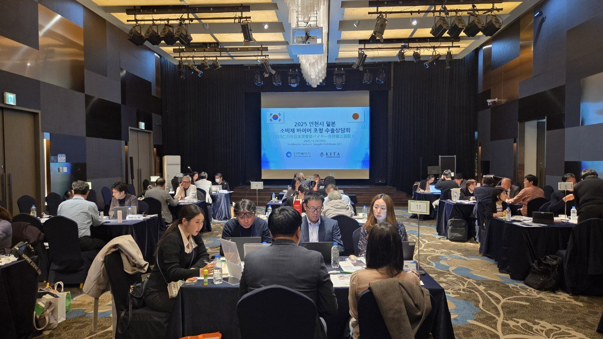
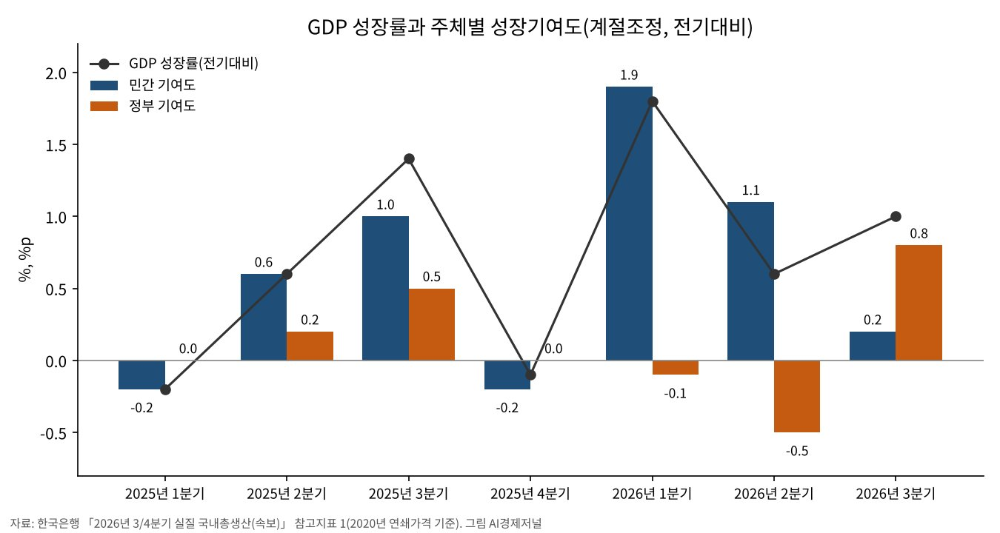

3분기 소득 18.8% 늘 때 가계소비 0.2% 감소
성장 1.0% 가운데 정부 기여 0.8%p
설비투자 4.1%·수출 2.3% 증가
도소매·숙박음식업 생산 0.4% 감소
AI경제저널=김갑봉 기자 | 한국은행은 올해 3분기 실질 국내총생산(GDP)이 2분기보다 1.0% 성장했다고 지난달 27일 밝혔다. 1년 전과 견주면 3.4% 성장이다.
실질 국내총소득(GDI)은 1년 전보다 18.8% 늘어 생산 증가율의 다섯 배를 넘었다(AI경제저널 계산). 같은 석 달 동안 가계의 소비는 2분기보다 0.2% 줄었다. 성장은 정부 지출과 반도체 투자·수출이 채웠다.

성장 1.0%를 채운 곳
한국은행 속보의 주체별 성장기여도를 보면 3분기 성장 1.0% 가운데 정부가 0.8%p, 민간이 0.2%p다. 2분기에는 민간 1.1%p, 정부 −0.5%p였다. 석 달 사이 두 주체의 몫이 뒤바뀌었다.
정부소비는 물건비와 건강보험급여비 지출이 함께 늘어 1.9% 증가했다. 정부 부문 투자의 성장기여도는 0.5%p다. 민간 부문 투자의 기여도는 0.1%p에 그쳤다.
지출 쪽으로 나누면 내수의 기여도가 0.9%p, 순수출이 0.1%p다. 수출은 1.1%p를 더했고 수입이 1.0%p를 덜었다. 통계상 불일치는 −0.1%p다.

2분기보다 줄어든 가계 소비
민간소비는 재화와 서비스가 모두 줄어 0.2% 감소했다. 재화에서는 승용차와 가전제품, 서비스에서는 금융과 음식이 줄었다고 한국은행은 밝혔다. 1년 전보다는 1.1% 많다.
민간소비 증가율은 지난해 3분기 1.1%, 4분기 0.4%, 올해 1분기 0.6%, 2분기 0.4%였다. 속보 표에 실린 2024년 1분기부터 11개 분기 가운데 감소는 이번이 처음이다.
생산 쪽에서는 도소매·숙박음식업이 0.4% 줄었다. 금융·보험업은 4.3% 감소했다. 서비스업 전체는 0.2% 늘어 2분기 1.0%보다 낮았다.
반도체 기계와 수출
설비투자는 반도체제조용기계를 비롯한 기계류가 늘어 4.1% 증가했다. 1년 전보다는 9.4% 많다. 지식재산생산물투자는 연구개발과 소프트웨어가 늘어 2.3% 증가했다.
수출은 반도체와 기계·전기장비를 중심으로 2.3% 늘었다. 수입은 원유와 반도체제조용기계가 늘어 2.4% 증가했다. 1년 전보다 수출은 8.6%, 수입은 7.0% 많다.
제조업 생산은 컴퓨터·전자·광학기기와 기계·장비가 늘어 2.0% 증가했다. 건설투자는 토목건설이 늘어 0.7% 증가했지만 1년 전보다는 0.7% 적다.
생산보다 빨리 늘어난 소득
실질 GDI는 2분기보다 3.4%, 1년 전보다 18.8% 늘었다. 1년 전 대비 증가율은 1분기 13.2%, 2분기 15.7%에 이어 세 분기째 두 자릿수다. 같은 기간 GDP 증가율은 3.8%, 3.7%, 3.4%다.
한국은행은 7월 19일 이슈노트에서 반도체 가격 강세에 따른 수출물가 상승이 교역조건 개선을 이끈다고 분석했다. 2000년대 이후 앞선 세 차례 개선기는 유가 같은 수입물가 하락이 주된 요인이었다고 짚었다.
교역조건이 나빠지던 때는 거꾸로였다. 한진희·류성현은 2010년 한국개발연구 논문에서 1996~2006년 GDI 증가율이 3.0%로 GDP 4.6%를 밑돌았다고 밝혔다.
두 연구자는 교역조건 하락이 대부분 공산품보다 연료 값이 더 오른 데서 왔다고 분석했다. 값이 오른 쪽이 수입품이냐 수출품이냐에 따라 소득이 생산보다 느리게도, 빠르게도 는다.
지난 6일 긴급 시장상황점검회의에는 재정경제부·금융위원회·금융감독원·한국은행이 모였다. 참석자들은 올해 3% 중반 성장과 수출 1조달러 달성 전망을 들어 경제의 기초체력이 견조하다고 봤다.
늘어난 소득은 누구에게
한국은행은 같은 이슈노트에서 GDI 증가가 가계 구매력을 넓혀 내수 회복을 뒷받침할 것으로 내다봤다. 동시에 임금 상승과 자본이득이 고소득·고자산층에 쏠려 있다고 짚었다.
이 계층은 늘어난 소득 가운데 소비에 쓰는 몫이 상대적으로 낮다고 한국은행은 설명했다. 반도체 산업의 생산·고용유발효과가 낮은 점도 내수 파급을 제약하는 요인으로 들었다.
한국은행의 8월 31일 이슈노트는 이천·화성·청주처럼 반도체 종사자가 많이 사는 지역을 분석했다. 두 반도체 기업의 성과급이 지급된 뒤 이 지역 소비는 다른 지역보다 최대 4% 높았다.
한국은행은 이 지역의 누적 소비 증가액을 지난해부터 올해 말까지 약 1조7000억원으로 추정했다. 연평균 8000억원으로 지난해 민간소비 증가액의 2% 수준이다.
고용노동부의 10월 고용행정 통계를 보면 고용보험 가입자는 1년 새 28만6000명 늘었다. 이 가운데 제조업은 1만4000명이다.
건설업 가입자는 5000명 줄어 39개월째 감소했다. 29세 이하 가입자는 5만4000명 줄었고 60세 이상은 20만4000명 늘었다. 3분기 GDP 속보치는 분기 마지막 달 실적을 다 담지 못해 잠정치에서 바뀔 수 있다.
참고문헌
- 한진희·류성현, 「1990년대 중반 이후 교역조건 하락추세의 원인분석」, 『한국개발연구』 32권 3호(통권 108호), 한국개발연구원, 2010, 35쪽~, https://koreascience.kr/article/JAKO201024236535424.pdf
- 한국은행 조사총괄팀, 「이번 교역조건 개선은 왜 다른가: 반도체 경기 호조의 실물경제 파급영향」, BOK 이슈노트 제2026-16호, 2026.7.19, https://www.bok.or.kr/portal/bbs/P0002353/view.do?nttId=11062977&menuNo=200433
- 한국은행 조사총괄팀, 「반도체 수혜지역의 소비는 어떻게 될까: 지역 미시데이터로 살펴본 파급효과」, BOK 이슈노트 제2026-20호, 2026.8.31, https://www.bok.or.kr/portal/bbs/P0002353/view.do?menuNo=200433&nttId=11064279
- 한국은행 경제통계2국, 「2026년 3/4분기 실질 국내총생산(속보)」, 공보 2026-10-22호, 2026.10.27, https://www.bok.or.kr/portal/bbs/B0000501/view.do?nttId=11065944&menuNo=201264
- 고용노동부, 「2026년 10월 고용행정 통계로 본 노동시장 동향」 보도자료, 2026.11.9, https://www.korea.kr/briefing/pressReleaseView.do?newsId=156788397
- 관계부처 합동, 「국내외 주식시장 변동성 확대로 단계별 대응조치 가동」 보도참고자료, 2026.11.6, https://www.korea.kr/briefing/pressReleaseView.do?newsId=156788244
[사진 출처]
- [사진1] 인천광역시 산업정책과 보도자료 「인천시,‘2025 일본 바이어 초청 수출상담회’성황리 개최」(2025.10.31) 첨부 사진, 공공누리 제1유형(출처표시) https://www.incheon.go.kr/IC010205/view?repSeq=DOM_0000000013423911 / [도표1] 한국은행 「2026년 3/4분기 실질 국내총생산(속보)」 참고지표 1로 AI경제저널 작성
관련기사
- [거시경제] 이윤은 18.5% 늘고 임금은 1.9% 늘었다
- [일자리·임금] 가계소득 늘어난 몫의 69%는 나랏돈이었다
- [소상공인] 매출 다섯 분기 만에 전년 대비 감소, 대출 연체 16조4000억원
저작권자 © AI경제저널 무단전재 및 재배포, AI학습 및 활용 금지